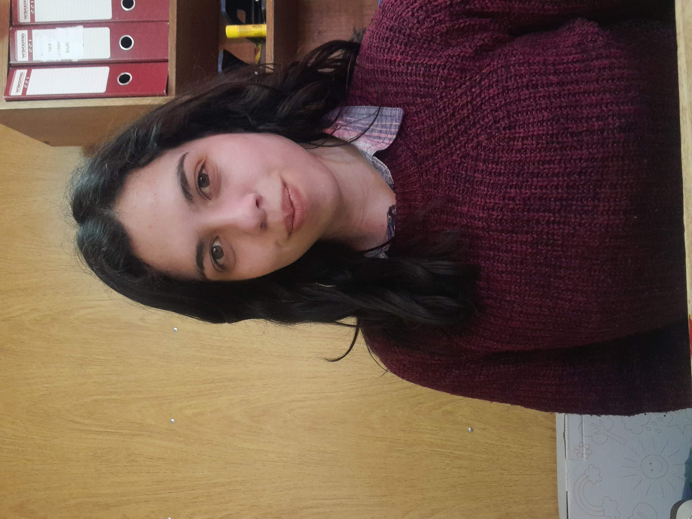

Curriculum Vitae
Nicol Sandoval
Licenciada en Psicología – Psicóloga de la Universidad de Tarapacá

Psicóloga de profesión. Con experiencia y conocimientos en el área organizacional
en Minería y Salud. Trabajando en el cambio cultural y bienestar de la organización
con la primera oficina de género en minería.
Datos personales
- Ciudad: Iquique
- Fecha de nacimiento: 26/11/1996
- Correo: Nicolsandovalu@gmail.com
- Red social: Linkedin
Aptitudes
- Proactiva
- Planificación y organización
- Resolución de conflictos
- Capacidad de análisis
Experiencia laboral
Psicóloga especialista en Género. Febrero 2022 - Actualidad
Oficina de género de Diversity Development Consulting, Proyecto QB2, minera Quebrada
Blanca. Trabajo en modalidad Online y Faena.
- Atención y orientación en casos de Acoso/abuso sexual, violencia y discriminación de
género.
- Realizar capacitaciones y charlas en prevención y promoción en materias de género.
- Identificar posibles riesgos y estrategias para la prevención y promoción.
Antecedentes académicos
Licenciada en Psicología - Psicóloga
Universidad de Tarapacá, 2015-2021
Portafolio HTML